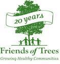

Friends of Trees

Website:
http://friendsoftrees.org Location:
Portland, OR
Friends of Trees brings people in the Portland-Vancouver metro area together to plant and care for city trees and urban natural areas. Through our Neighborhood Trees program, homeowners buy low-cost trees and plant them with their neighbors at weekend plantings. Through our Natural Area Restoration program, trained crew leaders guide volunteers at weekend events to restore natural areas. Since 1989, our volunteers have planted more than 375,000 trees and native plants.
Project Description:
Friends of Trees’ Technology Enhancement Project involves the following:
1) Establishment of a Friends of Trees staff, board, and arborist partners blog.
2) Expansion of our social media and online networking.
3) Fine-tuning of our Google Ads through tracking and analysis, the updating of keywords and ad content, and the creation of new Google Ad campaigns as appropriate.
4) Assistance in completing, cleaning, and managing our data in the migration from our old Access database to our new Salesforce database.
A summer 2009 start date for a CTC VISTA member is timely because this is Friends of Trees’ 20th anniversary year, and we anticipate receiving funds to create a new web site to replace our current one, which was created nine years ago and isn’t as flexible and fast-loading as we would prefer.
Whether or not we create a new web site, Friends of Trees needs to establish a blog. Currently we have a way to add a blog to our home page, but we don’t know yet if we’ll post it that way or through some other means. Our primary goal is to make our web site less passive and more active so we can engage our community online.
In particular, we need to reach even more of the younger people who typically sign up for our crew leader trainings to learn how to lead volunteers at our weekend events. Friends of Trees has just signed a contract with the city of Portland as part of the city’s Grey to Green Initiative, and we will need to plant more trees than ever in the coming years. That will require training more young leaders for our weekend plantings. These are the people we can reach most effectively through the online communications that a CTC VISTA volunteer can help us establish and expand.
Having a blog and a strong social media presence will enable us to interact with and educate more people in the community, expand our work with others in the restoration and urban forestry field, and engage more people as Friends of Trees tree purchasers, volunteers and members. Enhancing our use of our Google Ads Grant would drive more people to our web site, help us raise more money, and further increase our ability to engage the community in our work.
Also, we anticipate that our new Salesforce database will be ready for us to use by April 15. As we settle into this new CRM system, we need to ensure that our data is clean and we adopt best practices going forward. The new database will greatly increase Friends of Trees’ efficiency and effectiveness.
Friends of Trees is working with a consultant at Idealist Consulting to set up our new Salesforce system and to ensure a smooth migration of data. Our primary goal for the CTC VISTA member is that s/he identify current data that isn’t important for us to include in our new system so we can have a clean start with Salesforce.
Project Tangibles:
All parts of the Technology Enhancement Project will result in tangible products that will serve the Friends of Trees community for years to come: an educational blog, a strong social media presence, effective Google Ads, and an efficient CRM. Each product will be a model for other environmental groups and nonprofits for how to enhance an organization’s effectiveness. Also, Friends of Trees will create a report to show the effectiveness of establishing and enhancing our social media work, Google Ads, and blog. This report will be useful for us and will also help other nonprofits determine the importance of taking the same path.
Supported Projects
Technology Enhancement Coordinator
Toshio Suzuki
9/2009 — 5/2010
Friends of Trees’ Technology Enhancement Coordinator (TEC) will help Friends of Trees expand the effectiveness and extent of its communications through blogging, social media, and Google Ads. The TEC will also assist in organizing Friends of Trees’ donor and volunteer data so the organization can efficiently transition from using its current Access database to using its new Salesforce system.
1) Establishment of a Friends of Trees staff, board, and arborist partners blog.
2) Expansion of our social media and online networking.
3) Fine-tuning of our Google Ads through tracking and analysis, the updating of keywords and ad content, and the creation of new Google Ad campaigns as appropriate.
4) Assistance in completing, cleaning, and managing our data in the migration from our old Access database to our new Salesforce database.
Toshio started working with Friends of Trees in July 2009 and immediately began researching how other nonprofits handled their blogs, inviting our community partners to contribute to our blog once it was set up, collecting blog post ideas, taking photos, creating videos, and doing other work in anticipation of creating a blog for Friends of Trees. Since Friends of Trees was in the process of designing a new web site and we needed to set up the blog in sync with the new web site, in a format that could be integrated with the new web site and complement it in appearance, Toshio wasn’t able to officially launch the blog until some of our design decisions were made. Toshio launched the blog on Tuesday, Sept. 1, 2009. On that day, the blog had two visitors. As of my writing this report, the blog has more than 3,000 visitors a month and more than 200 visits per day. Each visitor spends about two and a half minutes on the blog. Through the blog, and through his comments on other group’s blogs, Toshio has increased Friends of Trees’ visibility and importance in the community in addition to driving many more people to our web site than visited it previously.
In addition to his accomplishments with our blog, Toshio’s work on our Google AdWords account has enhanced our online presence. One measure of his success is how much of our allotted $10,000 of in-kind Google ads per month we’re using, since the more we spend, the more people must be clicking on our ads. Since July 2009, our monthly spending has increased from $7,000 to the maximum $10,000. The number of clicks on our ads per month has increased from 8,000 to 14,000, and the number of impressions or times that people see our ads per month has increased from 400,000 to 620,000.
Toshio also manages our Flickr, YouTube, and Facebook accounts, posting photos that Friends of Trees staff and volunteers take at weekend plantings and adding comments to the photos as well as a link to our web site. This not only engages our supporters, who enjoy seeing the pictures, but also drives new people to our web site when our photos show up on Google Image searches. Toshio responds regularly to postings on our Facebook Fan page to keep that part of our online community engaged. We now have 900 Facebook fans. More recently, Toshio set up a Twitter account for Friends of Trees, and by tweeting a few times a day, he’s further increased traffic to our blog and web site and spread the word about our plantings and partnerships through numerous retweets. Toshio has produced many videos for both our blog and our YouTube site, and has posted the videos on local TV and newspaper web sites as well as sent them to elected officials featured in the videos, who have then posted the videos on their web sites.
Toshio accomplished a number of additional projects, including working with an IT consultant to add memory to our server so we could make regular backup copies of our extensive data. Toshio took on the project at the start of his service with us, when he was waiting to launch the blog as we made design decisions for our new web site. Another important project that Toshio took on as he waited for our blog to be set up was our organization’s transition from using MS Outlook to using Gmail. Toshio did online research and carefully timed the transition so it went very smoothly. Toshio also trained staff members how to use the various features of Gmail. We were eager to switch to Gmail because of the great amount of spam we received through our Outlook account. Gmail has been much better. Toshio also was an invaluable resource in producing some of our printed materials. In November, as I spent an unanticipated amount of time organizing Friends of Trees’ 20th anniversary celebration, Toshio agreed to design the printed newsletter I would ordinarily have produced. He knew InDesign software already, which was helpful, and he’s an excellent writer. He did a fine job on the newsletter.
Toshio brought his own expertise to the job. He already knew how to use WordPress and had created a blog of his own before he joined Friends of Trees. His writing skills, his ability to take photos and make videos, his willingness to learn about social media possibilities, and his openness to learning about all aspects of our work made it possible for him to accomplish a great deal quickly. Toshio’s personable way with Friends of Trees staff, volunteers and community partners also invited their participation in the blog.